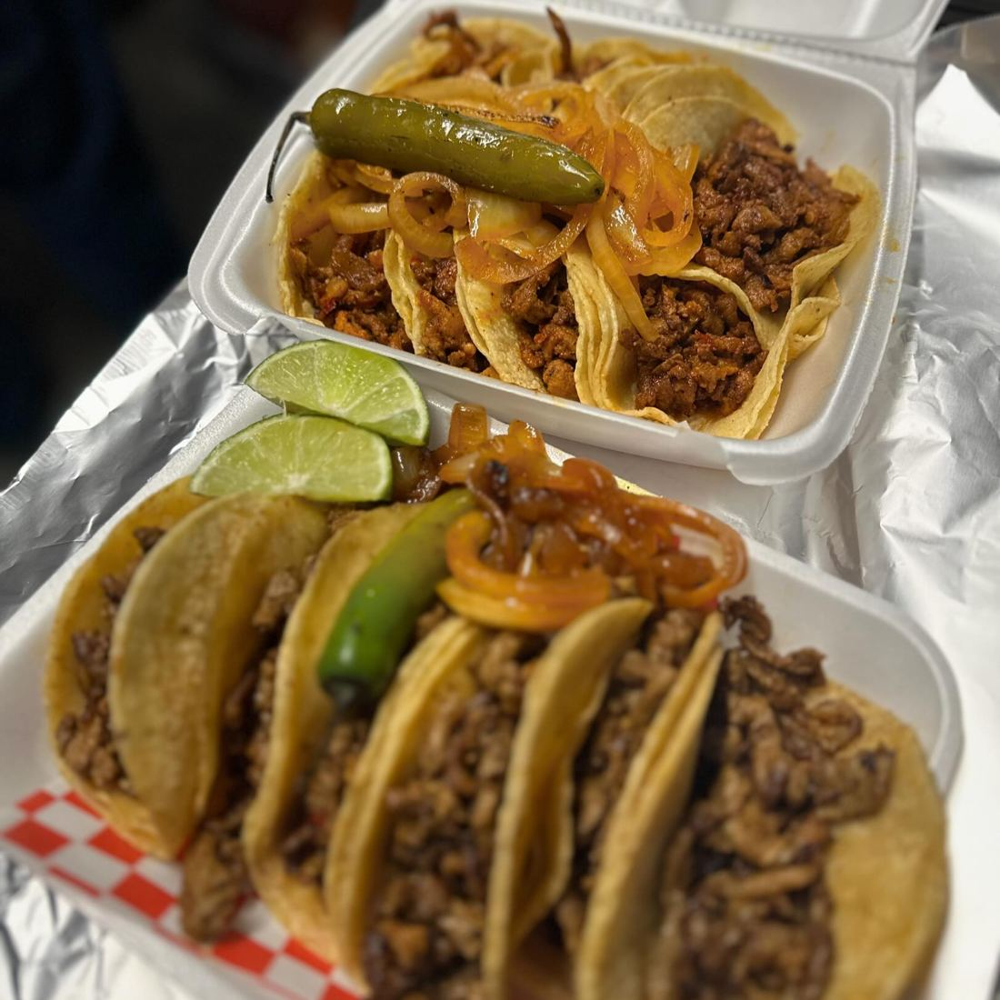
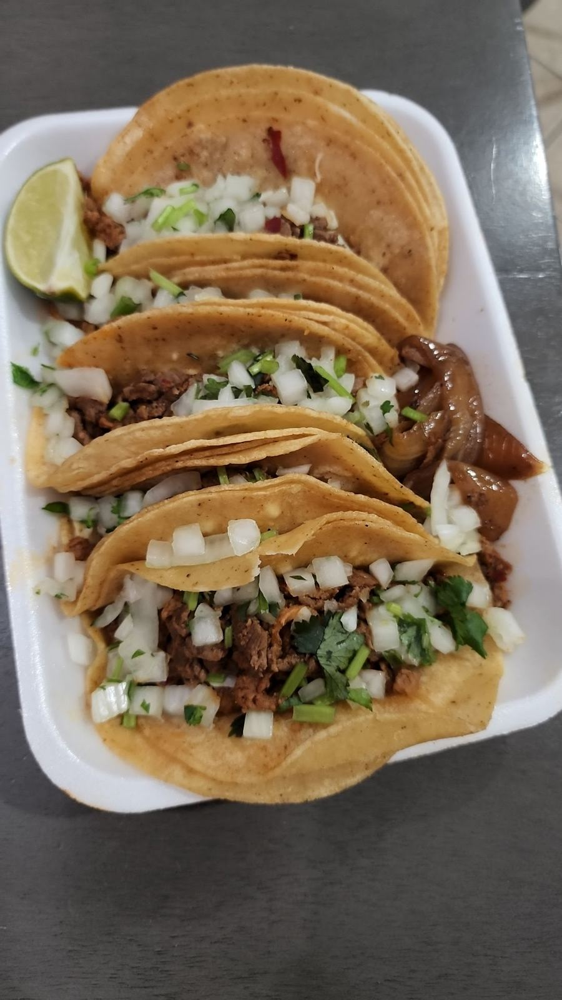
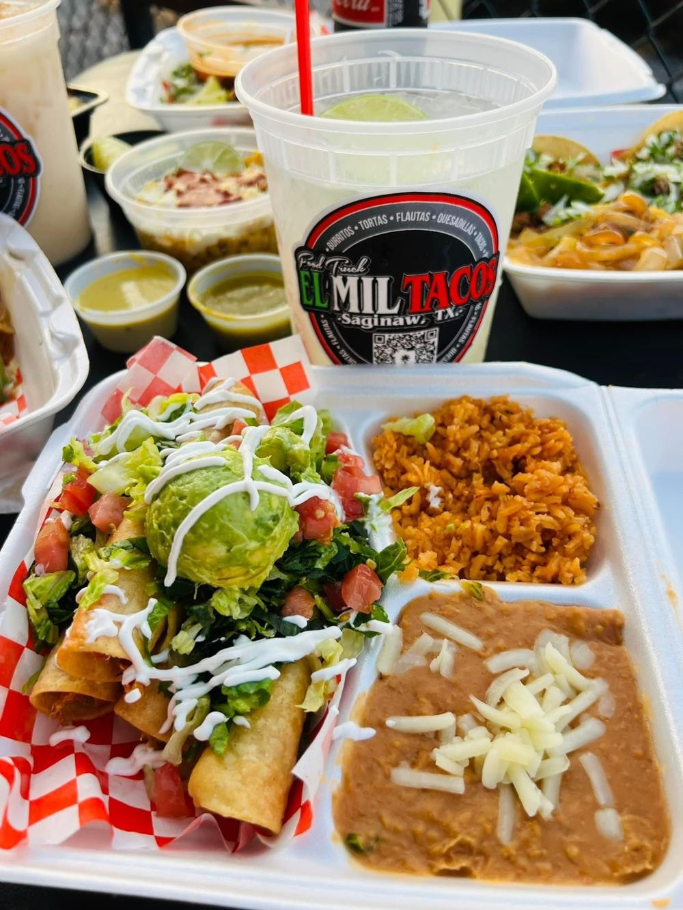
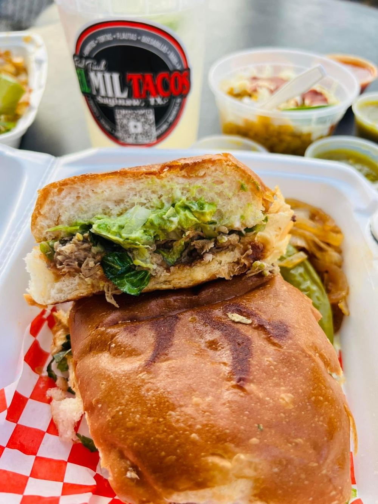
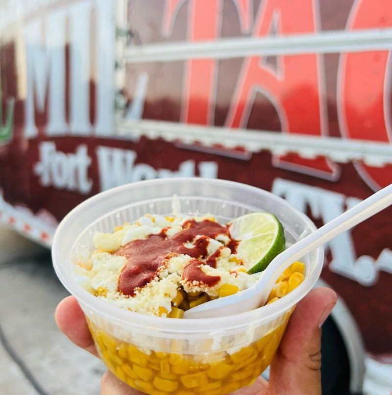
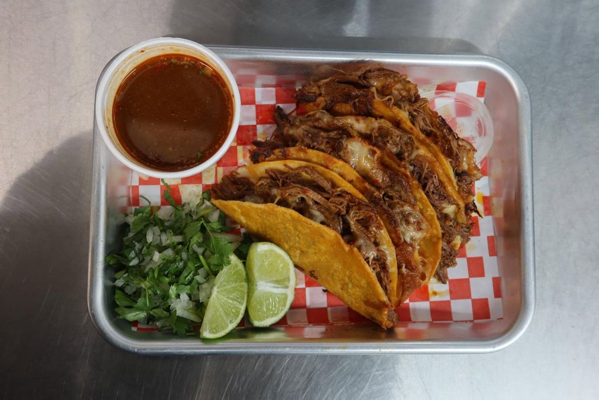
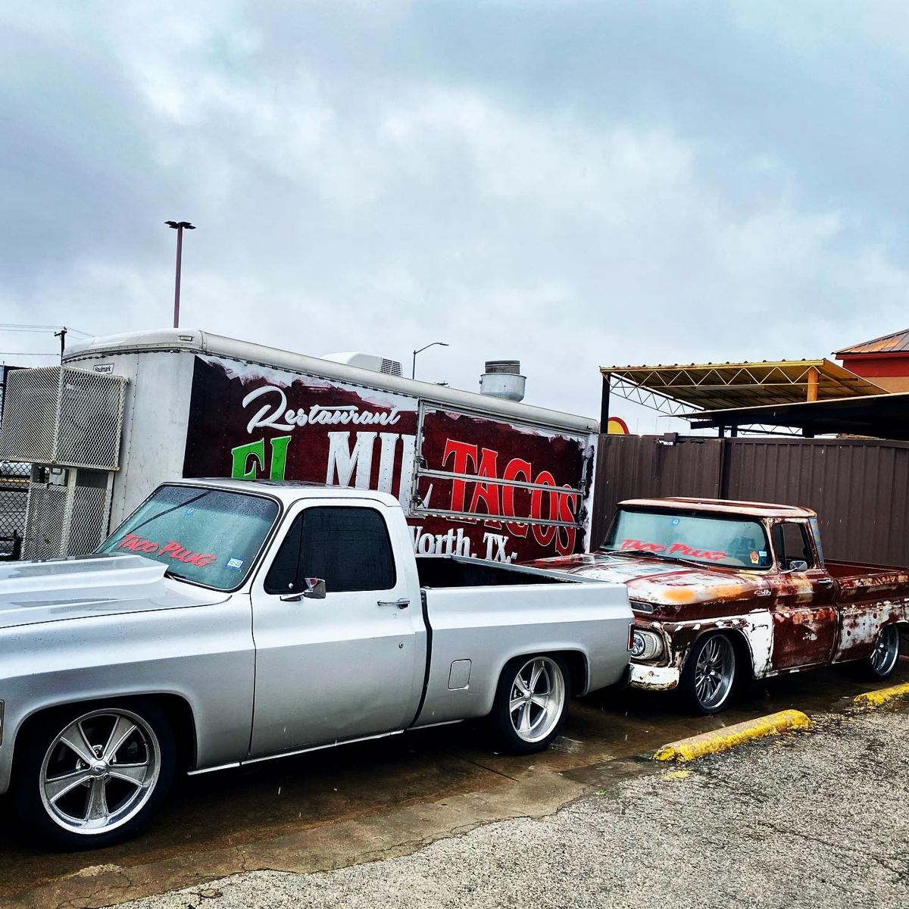
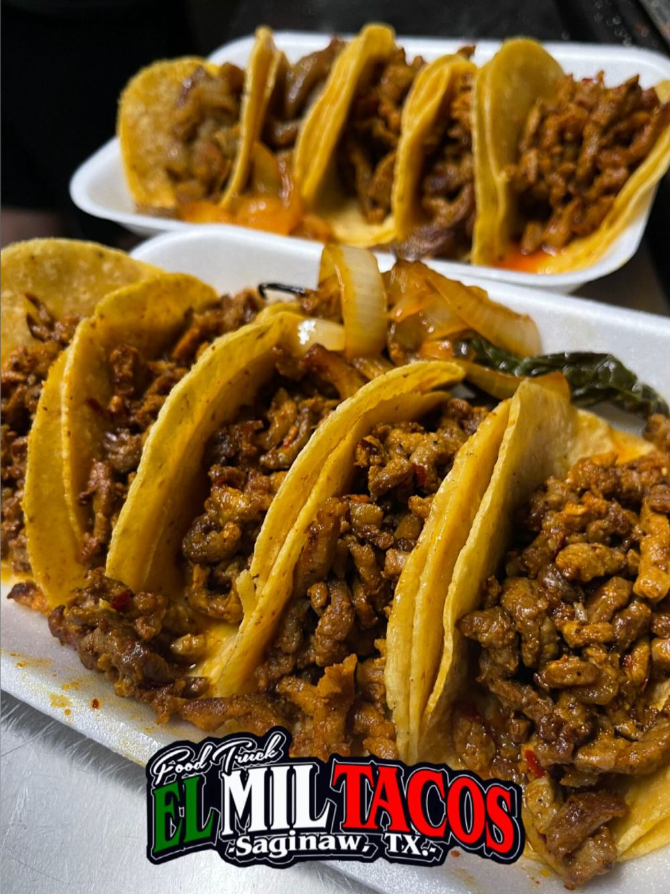
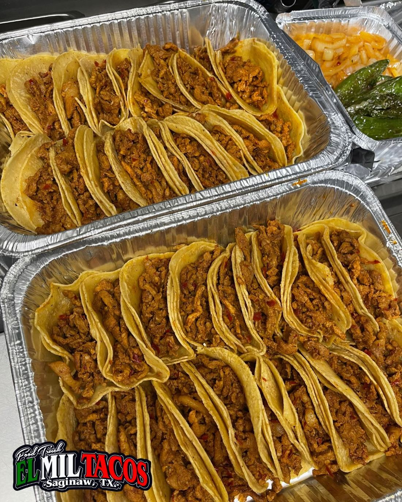

Authentic Mexican tacos in Saginaw, TX. Come taste the real deal. Formerly El Mil Tacos.
Call to orderSee the menu








Full trays of tacos for work lunches, birthdays and game days. Email the team or call, and pick up at the truck.
Mon closed
Tue–Thu 5–10 PM
Fri–Sat 4 PM–12 AM
Sun 2–10 PM
per public listing; confirm current hours